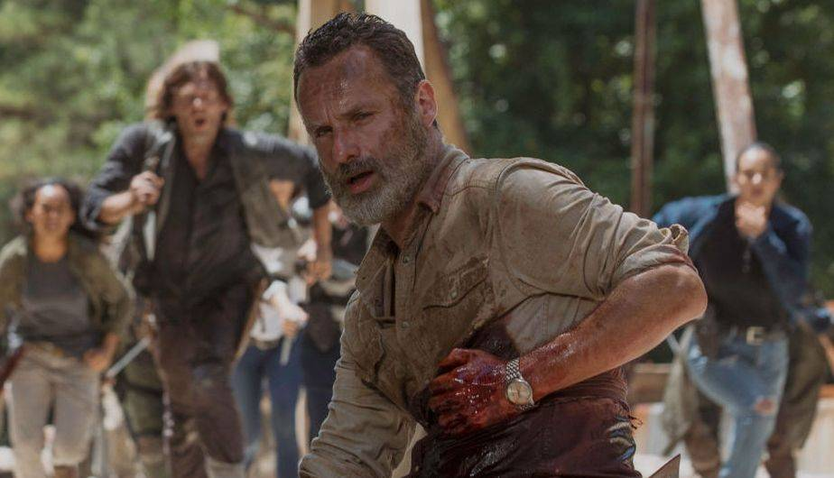
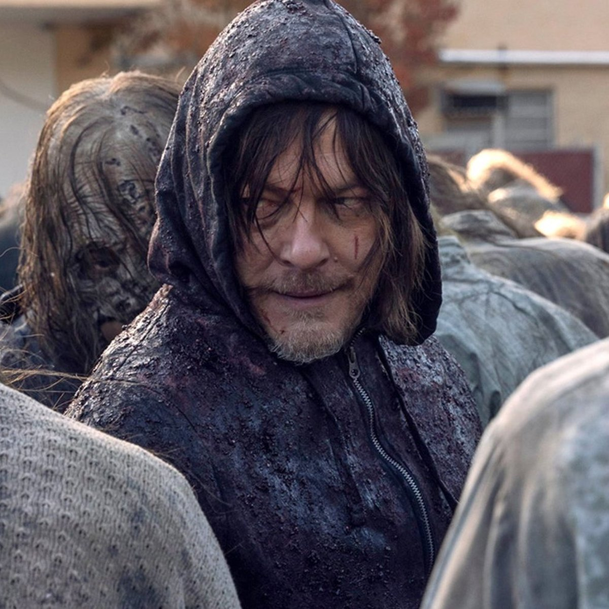
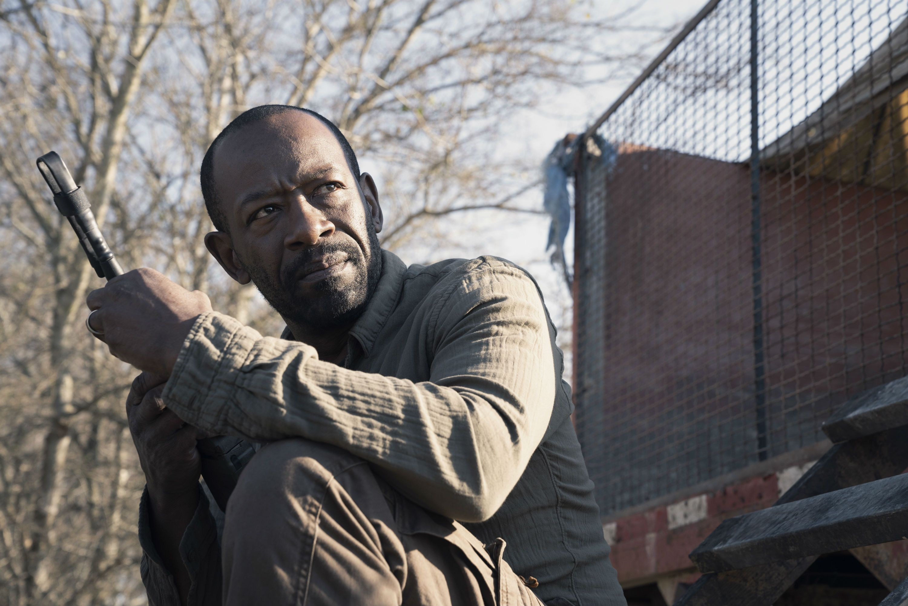

THE WALKING DEAD
INICIO
TRAILERS
CAPITULOS
NOTICIAS
PERFIL

“The Walking Dead: World Beyond” dio pistas sobre el regreso de Rick Grimes

The Walking Dead: El spinoff con Norman Reedus traerá a personajes 'perdidos'
Fear the Walking Dead revela cómo sobrevivió Madison Clark

Fear The Walking Dead: Morgan y Madison se reencuentran en el tráiler final de la temporada 7
Momento: Así luce el actor Khary Payton detrás de escena en The Walking Dead